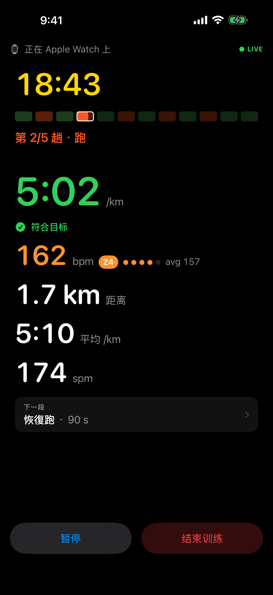
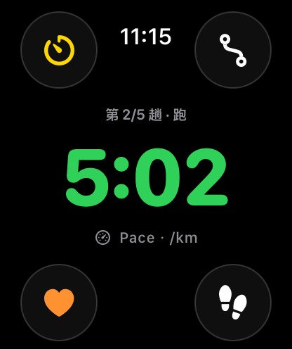

想建立跑步习惯
从走跑交替起步，或依照已有的跑步背景，选择合适的规律训练课程。
跑步计划 · IPHONE 与 APPLE WATCH
从建立习惯，到准备比赛。RunCraft 结合课程、配速与跑步引导，让你知道今天怎么跑，也看得懂下一步。
免费下载 · 21 天完整体验 · 无订阅


从你的目标开始
没有报名比赛，也可以开始。
从走跑交替起步，或依照已有的跑步背景，选择合适的规律训练课程。
先记下比赛目标，再检视支援的课程，以及需要的准备与时间。
完整体验期间或拥有 Lifetime 时，直接开始自由跑，把每一趟纪录留下来。
建立规律跑步，或储存比赛日期与距离。名称可以晚点再想；储存目标不会取代目前的课表。
检视相关跑步纪录与已填资料，修正改变的部分，再补上课程真正需要的资讯。
先确认训练内容、可跑日期与准备条件，再选用课程。有了比赛目标，不代表每种课程都适合。
出门之前
把今天的课程、训练目的与近期跑步放在一起看。不同类型的训练，有各自的配速与角色。
跑步途中
用 iPhone 或 Apple Watch 跟著课程跑，随时查看目前区段、配速与进度，把注意力留给眼前这一趟。

跑完之后
一起检视距离、分段、配速与心率，搭配可用的耗力程度与天气资讯。课程结束后，下一步由你选择，不会自动跳到更高强度。
怎么开始、配速代表什么，以及比赛或休息之后如何接续。
简单的收费方式
免费下载，可选择一次买断 Lifetime。没有订阅，也不会自动续订。
先试用课程、引导式跑步记录与分析，再决定是否购买。
仍可汇入 Apple 健康训练，查看基本历史、VDOT 与跑量。体验期后，由 RunCraft 开始训练需要 Lifetime。
解锁课程与 RunCraft 跑步记录。可恢复购买；符合资格的旧版付费使用者保有完整使用权。
21 天从首次于 App Store 取得 RunCraft 起算，不是首次开启。当地售价以 App 内显示为准；符合资格的 Lifetime 购买支援 Apple 家人共享。
不用。iPhone 本身就能执行引导式训练；搭配 Apple Watch 可在手腕查看进度与操作。可用资料会依装置与授权而不同。
不是每条路径都需要。你可以从走跑交替或自由跑开始；部分课程则需要相关经验、配速参考与足够的准备时间。
不会。先储存目标，再另外安排训练。既有课程与历史会保留；新课程仍需检视自己的安排与准备条件。
不会。恢复观察提供线索与提醒，不会自动算出替代课程，也不代表你已经准备好训练。
重新检视下一个方向与相关的已存背景。新课程仍需另外确认；过去纪录不会自动证明目前的准备与恢复状况。
不需要建立 RunCraft 帐号，没有广告或第三方分析追踪。资料在装置上处理，部分纪录可透过私人 iCloud 资料库同步；支援诊断档只有在你主动分享时才会送出。
RUNCRAFT
对课程、训练或 App 有问题？欢迎来信。 support@marstudio.app